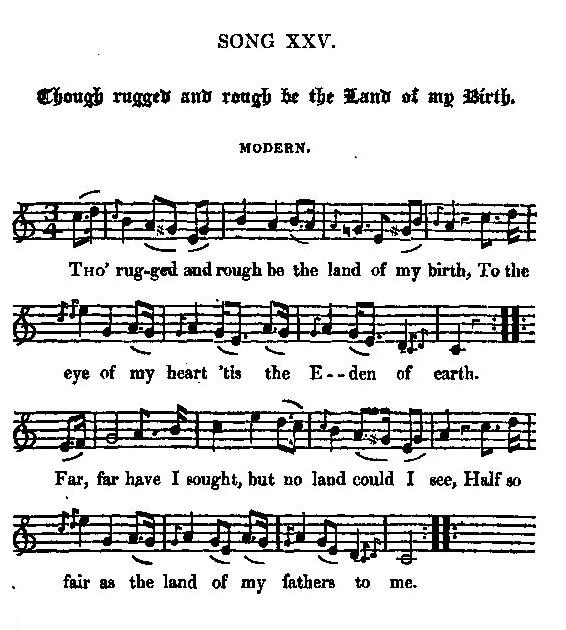

Though rugged and rough be the Land of my Birth
Quelque sauvage que puisse être le pays où je naquis
A song on Scottish identity, (contributed or written) by M.L.
Tune - Mélodie"Though rugged and rough be the Land of my Birth"
from Hogg's "Jacobite Relics" 2nd Series , Appendix, "Jacobite Songs", N°25, 1821
Sequenced by Christian Souchon

|
To the tune:
" Song 19th , as well as the last song (AJ 25:Though rugged and rough...) in this appendix, was sent me anonymously, with the signature here given; and the answer directed to be left at the post-office. They are two beautiful songs, and the author ought not to be ashamed of owning them." (Hogg in "Jacobite Relics"). It is remarkable that this song dedicated to the Scots national identity should be written in the King's English. |
A propos de la mélodie:
"Comme le chant n°19 , le présent chant N°25 de cette annexe, m'a été envoyé par un contributeur anonyme qui se désigne par les deux lettres M.L. et me prie de lui répondre poste restante. Ces deux chants sont magnifiques et leur auteur n'a pas lieu d'en avoir honte." (Hogg in "Jacobite Relics"). On remarquera que ce chant qui magnifie l'identité nationale écossaise est rédigé en anglais "officiel". |

|
THOUGH RUGGED AND ROUGH BE THE LAND OF MY BIRTH
Modern (in 1821) 1. Tho' rugged and rough be the land of my birth, To the eye of my heart 'tis the Eden of earth Far, far have I sought, but no land could I see, Half so fair as the land of my fathers to me. 2. And what though the days of her greatness be o'er, Though her nobles be few [1], though her kings are no more [2], Not a hope from her thraldom that time may deliver— Though the sun of her glory hath left her for ever ! 3. Dark, dark are the shades that encompass her round, But still 'mid those glooms may a radiance be found, As the flush through the clouds of the evening is seen, [3] To tell what the blaze of the noontide had been. 4. With a proud swelling heart I will dwell on her story, I will tell to my children the tale of her glory; When nations contended her friendship to know, When tyrants were trembling to find her their foe. 5. Let him hear of that story, and where is the Scot, Whose heart will not swell when he thinks of her lot; Swell with pride for her power, in the times that are o'er, And with grief that the days of her might are no more? 6. Unmanned be his heart, and be speechless his tongue, Who forgets how she fought, who forgets how she sung; Ere her blood through black treason was swelling her rills, Ere the voice of the stranger was heard on her hills! 7. How base his ambition, how poor is his pride, Who would lay the high name of a Scotsman aside; Would whisper his country with shame and with fear, Lest the Southrons should hear it, and taunt as they hear. [4] 8. Go tell them, thou fool! that the time erst hath been, When the Southrons would blench if a Scot were but seen; When to keep and to castle in terror they fled, As the loud border echoes resounded his tread. 9. Shall thy name, O my country! no longer be heard, [5] Once the boast of the hero, the theme of the bard; Alas ! how the days of thy greatness are gone, For the name of proud England is echoed alone ! 10. What a pang to my heart, how my soul is on flame, To hear that vain rival in arrogance claim; As the meed of their own, what thy children had won, And their deeds pass for deeds which the English have done. [6] 11. Accursed be the lips that would sweep from the earth, The land of my fathers, the land of my birth; No more 'mid the nations her place to be seen, Nor her name left to tell where her glory had been! 12. I sooner would see thee, my dear native land, As barren, as bare as the rocks on thy strand, Than the wealth of the world that thy children should boast, And the heart-thrilling name of old Scotia be lost. 13. O Scotia, my country, dear land of my birth, Thou home of my fathers, thou Eden of earth; Through the world have I sought, but no land could I see Half so fair as thy heaths and thy mountains to me! M.L. Source: "The Jacobite Relics of Scotland, being the Songs, Airs and Legends of the Adherents to the House of Stuart" collected by James Hogg, volume II published in Edinburgh by William Blackwood in 1821. |
QUELQUE SAUVAGE QUE PUISSE ÊTRE LE PAYS OU JE NAQUIS
Moderne (en 1821) 1. Quelque sauvage que puisse être le pays où je naquis, C'est celui qui m'a vu naître; pour moi c'est le Paradis. J'ai fait de longs voyages et n'ai jamais jeté les yeux Sur d'aussi beaux paysages qu'au pays de mes aïeux. 2. Si sa grandeur ancienne est morte, qu'elle appartient au passé, Ses nobles ont pris la porte [1], si ses rois sont détrônés, [2], Si vaine est l'espérance qu'il recouvre sa liberté, Si le soleil de sa gloire semble éteint à tout jamais, 3. Si bien sombres sont les ténèbres dont mon pays est cerné, Pourtant dans ce ciel funèbre, l'on discerne une clarté: On voit que les nuages s'empourprent lorsque vient la nuit, [3] Disant assez quel orage, avait fait rage à midi. 4. Je méditerai son histoire, puis le cœur gonflé d'orgueil, Je raconterai sa gloire à mes enfants dans le deuil, Comment jadis les peuples ont quémandé son amitié, Tandis que les tyrannies redoutaient de l'affronter. 5. S'il prête seulement l'oreille, montrez-moi donc l'Ecossais De qui l'âme ne tressaille d'une légitime fierté, Pensant à la puissance qui fut la sienne au temps jadis, Et d'âpre désespérance pour le déclin d'aujourd'hui! 6. Quiconque sa lutte opiniâtre renie, et ses chants d'espoir, Que son cœur cesse de battre, sa langue de se mouvoir! Avant que la traitrise ne gonfle de sang nos ruisseaux Que des voix d'outre-Tamise ne soient répétées par l'écho. 7. Est-il ambition plus basse, plus grand manque de fierté Qu'abdiquer de guerre lasse, son noble nom d'Ecossais? Honni soit qui chuchote, honteux le nom de sa patrie; De peur de voir quelque ilote saxon se moquer de lui. [4] 8. Va leur dire, à ces amnésiques, qu'autrefois il fut un temps Où l'Anglais, pris de panique, détalait en nous voyant, Vers ces remparts de pierres où tous couraient se réfugier Quand l'écho de la Frontière de nos pas puissants résonnait. 9. Ton nom doit-il donc, ma patrie, ne plus être prononcé [5] Qui faisait l'orgueil des braves et des hymnes le sujet? C'en est fait de ta gloire, ta grandeur c'était le passé, L'écho ne sait que reprendre l'arrogant nom de l'Anglais. 10. Pour mon cœur, quelle torture, et que mon âme est en feu, Quand ce rival immature réclame, présomptueux Comme sa récompense, ce que tes enfants ont glané, Et fait passer leurs prouesses pour des hauts-faits des Anglais! [6] 11. Qu'elles soient maudites ces lèvres qui ne veulent plus nommer Le beau pays de mes pères, ce pays où je suis né! Il a perdu sa place parmi le concert des nations, Et, pour rappeler sa gloire, a perdu jusqu'à son nom! 12. Et j'estimerais préférable, O mon cher pays natal,, De te voir plus misérable que les rocs du littoral, Que de voir les richesses du monde aux mains de tes enfants, Mais qu'à jamais disparaisse, Scotia, ton nom exaltant. 13. Ecosse, pays de mes pères, c'est là que j'ai mon berceau. C'est le paradis sur terre. Je ne connais rien de plus beau. J'ai parcouru le monde sans pouvoir retrouver ailleurs La majesté de tes landes et tes monts si chers à mon cœur. M.L. (Trad. Christian Souchon (c) 2010) |
|
[1]
her nobles be few
: A hint at the
attainted Scottish Nobles.
[2] Her kings are no more : The Stuart dynasty, definitely expelled in 1714. [3] Flush : one of the first forms of "contrition" was the Romantic elegy for the Jacobite Clans, staged by Sir Walter Scott and his "followers", that surrounded, for instance, King George IV's first visit to Scotland in 1822. [4] Southrons : refers to both Lowlanders and English [5] "Shall thy name no longer be heard?" : for a few decade the word "Scotland" did not refer to the whole kingdom . The 1746 Act of Proscription addresses the Highlands as "that part of North Britain known as Scotland". [6] "Their deeds pass for deeds which the English have done" : this purposeful ambiguity, denying the Scottish identity, was seldom so clearly expressed in a Jacobite song. This "knavish trick" was also used in France: see note to the Breton song "Emgann an Tregont" . |
[1]
Ses nobles ont pris la porte
: une allusion aux
nobles déchus de leurs droits
.
[2] Ses rois sont détrônés : les Stuarts furent définitivement écartés en 1714. [3] S'empourprent : l'une des premières formes de "contrition" fut l'évocation élégiaque des clans Jacobites par les auteurs romantiques gravitant autour de Walter Scott. Elle s'exprima, entre autre, lors de la première visite dur roi Georges IV en Ecosse en 1822. [4] "Ilote saxon": le mot "Southron" s'applique tant aux Lowlanders qu'aux Anglais. [5] "Ton nom doit-il ne plus être prononcé?" : à un moment le mot "Scotland" n'a plus désigné l'ensemble du royaume. L'acte de Proscription de 1746 parle des Highlands comme de "cette partie de la Grande Bretagne septentrionale appelée 'Scotland'". [6] "Fait passer leurs prouesses pour des hauts-faits des Anglais" : Il est rare de trouver cette ambiguïté voulue, qui nie l'identité écossaise, exprimée aussi clairement, dans les chants Jacobites. Ce procédé fut aussi utilisé en France: cf. note à propos du chant "Emgann an Tregont" . |
|
|
|